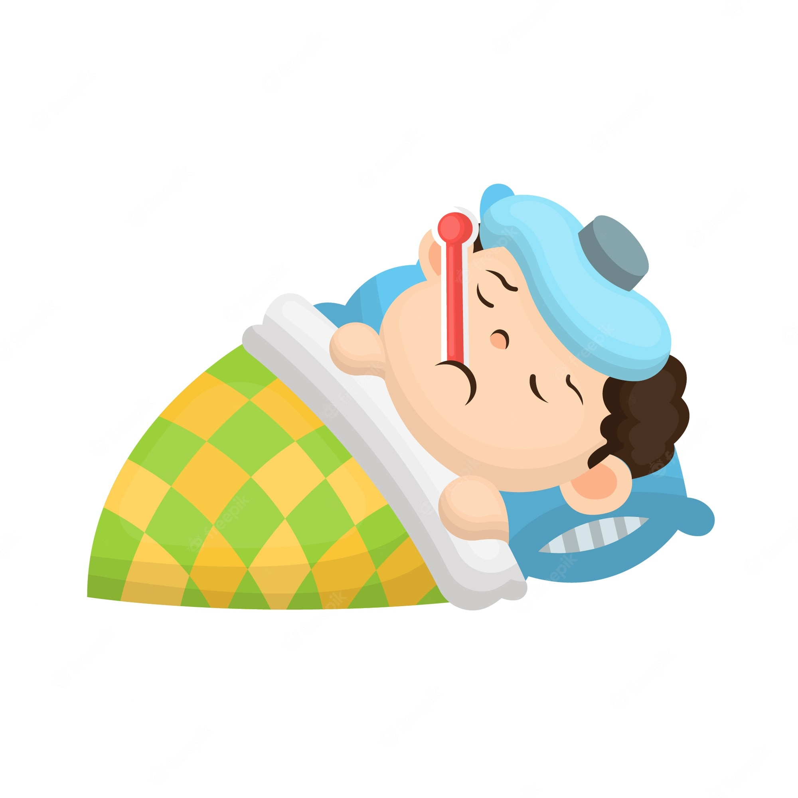

FEVER
A fever is a higher-than-normal body temperature. It’s a sign of your body's natural fight against infection.
For adults, a fever is when your temperature is higher than 100.4°F.
For kids, a fever is when their temperature is higher than 100.4°F (measured rectally); 99.5°F (measured orally); or 99°F (measured under the arm).
The average normal body temperature is 98.6° Fahrenheit (or 37° Celsius). When you or your child’s temperature rises a few degrees above normal, it’s a sign that the body is healthy and fighting infection. In most cases, that’s a good thing.
But when a fever rises above 102°F it should be treated at home and, if necessary, by your healthcare provider if the fever doesn’t go down after a few days.

SYMPTOMS
Body temperatures vary slightly from person to person and at different times of day. The average temperature has traditionally been defined as 98.6 F (37 C). A temperature taken using a mouth thermometer (oral temperature) that's 100 F (37.8 C) or higher is generally considered to be a fever. However, body temperature fluctuates naturally throughout the day, especially with physical activity.
A low grade fever occurs when a person’s body temperature reaches 100–102°F (37.8 to 39°C). A high grade fever occurs when a person’s body temperature exceeds 104°F (40°C).
Depending on what's causing a fever, other fever signs and symptoms may include:
1.Sweating
2.Chills and shivering
3.Headache
4.Muscle aches
5.Loss of appetite
6.Irritability
7.Dehydration
8.General weakness
REMEDIES
Drinking lots of fluids
During a fever, the body needs to use more water to compensate for its elevated temperature. This can lead to dehydration.
Drinking water or an electrolyte replacement drink can help rehydrate the body.
Resting
Fighting an infection takes a lot of energy. People should rest as much as possible to help the body recover.
Taking a tepid bath
Many people consider taking a cold bath when they have a fever. However, doing so can cause shivering, which will increase body temperature even more.
Instead, people can take a lukewarm or tepid bath to help the body cool off. A bath can also help soothe tired muscles.
Using over-the-counter medications
Medications are not usually necessary to treat a fever. However, some over-the-counter (OTC) medications can help reduce a fever and make a person feel more comfortable.
Ayurvedic treatment
1.Basil
Basil is an effective herb for bringing down fever. This herb is just as effective as many types of antibiotics in the market. Its healing properties will help reduce fever very quickly. Take about 20 basil leaves and boil them, now add 1 teaspoon of crushed ginger in the strained tulsi water, and boil until the solution gets reduced to half. Add a little honey and drink this tea two or three times a day for three days to get relief.
2.Garlic
Garlic is packed with many antibacterial properties, according to the book Healing Foods by DK Publishing. "The main beneficial ingredients of this member of allium family are allicin and diallylsulfides-sulfurous compounds that are antibacterial and antifungal". The warm nature of garlic can also lower high fever by promoting sweating. Crush 1 garlic clove and add it to 1 cup of hot water. Let it rest for 10 minutes, and then strain. Drink this twice a day for best results.
3.Ginger
The perennial herb native to China and India known as Zingiber officinale can prove to be an aid to a plenty of your health woes like cold, flu, inflammation, sore throat and fever. Its natural antiviral and antibacterial elements help fight the infection in your body and bolster your immunity from within. You can have it in a form of tea, by adding 1 1/2 teaspoon of grated ginger to 1 cup of boiling water.Add some honey to flavour it, and drink this tea at least three or four times a day.Or you can also mix together 1 1/2 teaspoon of ginger juice
HEALTHY SPIRITS is optimized for learning.Remidies might be simplified to improve reading and basic understanding. Tutorials, references, and examples are constantly reviewed to avoid errors, but we cannot warrant full correctness of all content. While using this site, you agree to have read and accepted our terms of use, cookie and privacy policy.
Copyright 1999-2022 by Refsnes Data. All Rights Reserved.